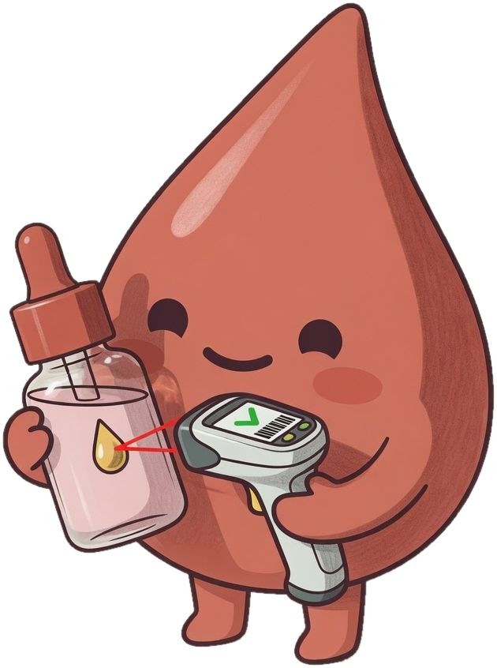

This ONE ingredient was in all 3
products that broke me out
products that broke me out

Comment
SKINSTEL
and I’ll DM you the link.
Scan your own shelf for free.
Scan your own shelf for free.
@skins_tel
